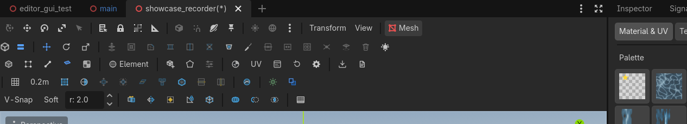

Interface
A toolbar that never hides, a floating overlay, a material dock, a UV bottom panel.

Toolbar rows
The bar is a sibling below Godot's 3D toolbar. It stays visible with nothing selected; context buttons disable instead of vanishing.
Row 1 — tools and mesh ops, plus the Env menu.
| Group | Buttons | Notes |
|---|---|---|
| Tools | The plugin's own tool. While editing, Godot's Q/V buttons are disabled. Shortcuts W E R still work. | |
| Ops | Grey = wrong selection. Tooltip says what it needs. | |
| Env | Dawn / Day / Dusk / NightRow 1 · EnvironmentTime of DayQuick environment presets: Dawn, Day, Dusk, Night. Export stores the preset name.Needs: Nothing (always enabled) | Relights the edited scene. |
Scale tooltip, verbatim: axis handles scale freely; the center square scales all axes together (Shift + center on faces insets).
Row 2 — modes, space, shapes, docks, export.
| Control | What it does |
|---|---|
| Selection mode. Vertex H, Edge J, Face K, Texture 6. Object is the toolbar button (unbound by default). | |
| SpaceRow 2 · OrientationSpaceXCycles the gizmo orientation space: Element, Object, World.Needs: Nothing | Cycles Element / Object / World (X). |
| Always enabled. Pick a primitive, then drag. | |
| Draw a polygon, extrude it. | |
| Live only while the selected mesh is a pristine, unedited factory shape. | |
| Focuses the Material & UV dock. | |
| Opens the 2D UV editor bottom panel. | |
| Pins the overlay so it does not auto-hide. | |
| Docks the overlay back to the bottom-left. | |
| Display: grid, wireframe, selection/hover opacity. | |
| Dialog: PBM (default) or GLB — modern bake (lightmap-ready, first) / retro baked map (vertex-lit). | |
Opens this site (bundled docs-site/index.html). |
Rows 3 & 4 (extended tools) — grid & snapping settings, selection suite, auto-smooth, object state, snapping toggles, object tools, CSG booleans, Trim Walls. They ship visible; fold them with the Extended ToolsRow 1 · HeaderExtended ToolsShows or folds Rows 3 & 4 (extended tools). The state is remembered across sessions.Needs: Nothing (always enabled) toggle — the state is remembered across sessions.
| Group | Controls | What it does |
|---|---|---|
| Grid & snapping | Grid, snap-step readout | Grid settings moved here when row 3 exists — it has the room for the readout. |
| Selection | Advanced selection suite. Invert Ctrl+I, Grow Alt+G, Shrink Shift+Alt+G, Coplanar Alt+C, Loop Alt+L, Ring Alt+R. | |
| Object state | LitRow 3 · Object StateLitUnbound (rebindable)Shading on/off for every selected object. Mixed selections render unchecked; checking synchronizes all of them.Needs: Selected objects, Cast ShadowsRow 3 · Object StateCast ShadowsUnbound (rebindable)Shadow casting on/off for every selected object. Same mixed-checkbox semantics as Lit.Needs: Selected objects | Shading and shadow casting for every selected object (PBMesh, MeshInstance3D, CSG). Mixed-checkbox semantics: all on = checked, all off / mixed = unchecked, and checking synchronizes the whole selection. Rebindable as Object: Toggle Lit / Cast Shadows. |
| Objects | Merge ObjsRow 4 · Object ToolsMerge ObjsUnbound (rebindable)Merges the selected PBMesh nodes into one.Needs: 2+ selected PBMeshes, MirrorRow 4 · Object ToolsMirrorUnbound (rebindable)Mirrors the object's geometry across local X (winding corrected).Needs: A PBMesh, Center PivotRow 4 · Object ToolsCenter PivotUnbound (rebindable)Moves the pivot to the bounding-box center: the geometry stays put, the node origin moves (works in Object mode).Needs: A PBMesh, Freeze XformRow 4 · Object ToolsFreeze XformUnbound (rebindable)Bakes the node transform into vertex positions and resets the transform to identity.Needs: A transformed PBMesh, PoibuilderizeRow 4 · Object ToolsPoibuilderizeUnbound (rebindable)Converts any MeshInstance3D or CSG shape (including CSGCombiner3D) into an editable PBMesh.Needs: A MeshInstance3D or CSG node | Combine meshes, mirror across X, recenter pivot to bounds, bake transform into vertices, convert MeshInstance3D/CSG to PBMesh. |
| CSG | CSG UnionRow 4 · CSG BooleansCSG UnionUnbound (rebindable)Solid union of the selected meshes (select target first, cutter last).Needs: 2+ selected meshes, CSG SubtractRow 4 · CSG BooleansCSG SubtractUnbound (rebindable)Subtracts the LAST-selected mesh from the FIRST-selected mesh.Needs: Target + cutter selected, CSG IntersectRow 4 · CSG BooleansCSG IntersectUnbound (rebindable)Solid intersection of the selected meshes.Needs: 2+ selected meshes | Real-time CSG booleans with full undo. Select target first, cutter last. |
| Smoothing | Recalculate smoothing groups by dihedral angle (45° threshold). | |
| Snapping & Tools | V-SnapV-SnapSoftRow 4 · SnappingV-SnapHold V (toggle available)Snaps dragged elements to the nearest mesh vertex (or hold V during a drag).Needs: A drag, SoftV-SnapSoftRow 4 · SnappingSoftUnbound (rebindable)Proportional editing: a move also drags nearby unselected vertices with a smooth falloff (radius beside the toggle).Needs: A selection (proportional) + radius spinner, Trim WallsRow 4 · Trim WallsTrim WallsEnter applies · Esc cancelsClick wall faces to sweep mitred trim along them (teal hover, amber chosen).Needs: Wall faces to click | Snapping to vertices, proportional editing with smooth falloff, and interactive wall-clicking trim. |
Overlay
A compact floating panel in the viewport.
- Selection readout while something is selected.
- Drag readout while dragging.
- Params modal for shape create and bevel.
- ⚙ Edit Emitter Properties while a placed particle emitter is in the selection — the fine-tuning surface for emitters (count, size, speed, spread, blending, flipbook). It works from object mode too; the emitter session stays open even while no mesh is selected.
- Drag it by the header. Pin with
 Panel
Panel


 Row 2 · DocksPanelPins the floating overlay panel on (it otherwise auto-hides when nothing is selected).Needs: Nothing. Recover with Reset PanelRow 2 · DocksReset PanelRecovers the overlay panel and dock to the bottom-left corner if they were dragged away.Needs: Nothing.
Row 2 · DocksPanelPins the floating overlay panel on (it otherwise auto-hides when nothing is selected).Needs: Nothing. Recover with Reset PanelRow 2 · DocksReset PanelRecovers the overlay panel and dock to the bottom-left corner if they were dragged away.Needs: Nothing.
Params modal rules (do not mix these up):
- Shape create / Edit Params: Apply commits, Cancel restores. Clicking elsewhere cancels.
- Bevel: clicking elsewhere applies.
- Any mode or tool change applies the open modal first.
- Esc before the confirming create-click creates nothing.
Docks
- Material & UV — six modes on one dock: Material & UV (palette, per-face assignment), Texture Paint (the splat brush), Stamp (decals), Sprite (billboard placement), Shapes (always-armed primitive placement), and Particles (click-to-place emitters). See Materials and Paint & stamps.
- UV Editor — bottom panel, can pop out to a window. See UV editor.
Status
During creation the overlay shows a hint (base drag, then height). Extents print in metres. Directional shapes (doors, stairs) display an orange facing arrow on the base plane; holding Ctrl locks the arrow direction so lateral sizing won't flip the facing. Environment presets write a scene meta the export reads. While a placement mode is armed (paint, stamp, sprite, shapes, particles) a small banner at the top of the viewport names it and how to leave it — it is a pure readout and never eats clicks.
The toolbar never hides. If a button is grey, read its tooltip — it is waiting for faces, or edges, or two objects.